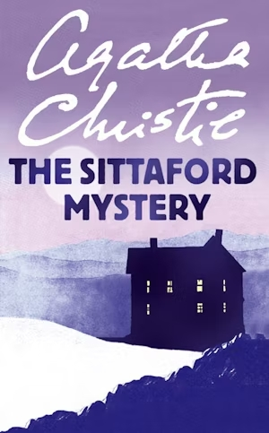
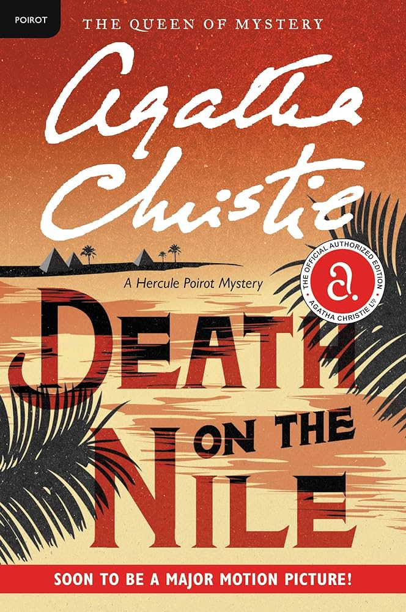
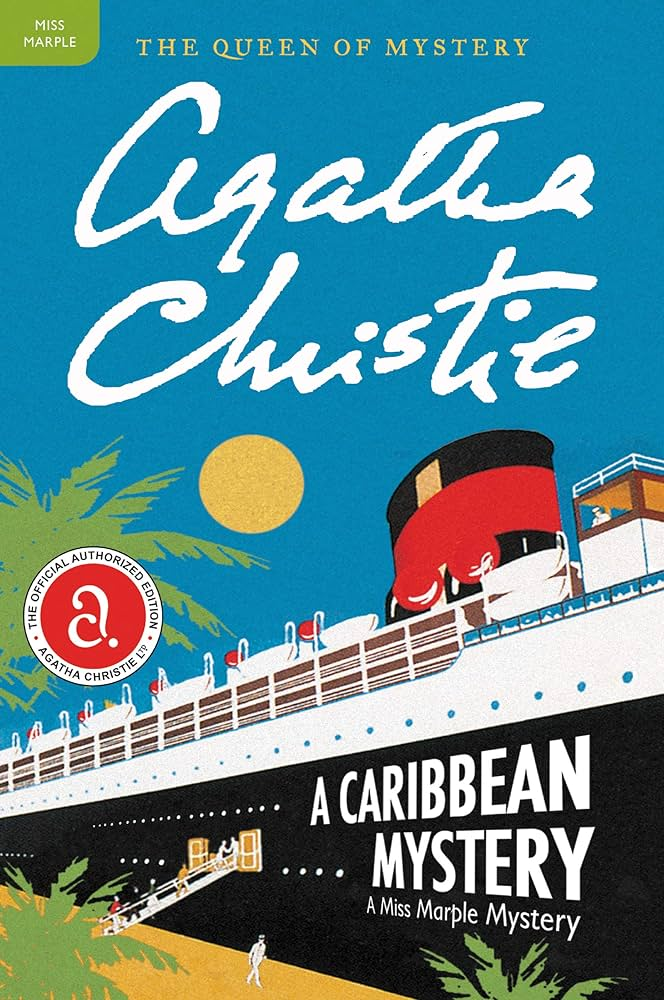

In a remote house in the middle of Dartmoor, six shadowy figures huddle around a small table for a seance. Tension rises as the spirits spell out a chilling message: ‘Captain Trevelyan… dead… murder.’ Is this black magic or simply a macabre joke? The only way to be certain is to locate Captain Trevelyan. Unfortunately, his home is six miles away and, with snow drifts blocking the roads, someone will have to make the journey on foot.

The tranquillity of a cruise along the Nile is shattered by the discovery that Linnet Ridgeway has been shot through the head. She was young, stylish and beautiful, a girl who had everything – until she lost her life. Hercule Poirot recalls an earlier outburst by a fellow passenger: ‘I’d like to put my dear little pistol against her head and just press the trigger.’ Yet in this exotic setting’ nothing is ever quite what it seems.

An exotic holiday for Miss Marple is ruined when a retired major is killed… As Miss Marple sat basking in the Caribbean sunshine she felt mildly discontented with life. True, the warmth eased her rheumatism, but here in paradise nothing ever happened. Eventually, her interest was aroused by an old soldier’s yarn about a strange coincidence. Infuriatingly, just as he was about to show her an astonishing photograph, the Major’s attention wandered. He never did finish the story...
 Clarissa, the wife of a Foreign Office diplomat, is given to daydreaming. ‘Supposing I were to come down one morning
and find a dead body in the library, what should I do?’ she muses. Clarissa has her chance to find out when she
discovers a body in the drawing-room of her house in Kent.
Clarissa, the wife of a Foreign Office diplomat, is given to daydreaming. ‘Supposing I were to come down one morning
and find a dead body in the library, what should I do?’ she muses. Clarissa has her chance to find out when she
discovers a body in the drawing-room of her house in Kent.
Desperate to dispose of the body before her husband comes home with an important foreign politician, Clarissa
persuades her three house guests to become accessories and accomplices. It seems that the murdered man was not
unknown to certain members of the house party (but which ones?), and the search begins for the murderer and the
motive, while at the same time trying to persuade a police inspector that there has been no murder at all. This
novelisation by Charles Osborne is based on Agatha Christie's play, Spider's Web.
The language and sentences are Agatha Christies’ typical style that are most enjoyable to read and easy to
understand. She conveys the intricacy of a murder mystery with so much easy. Her sentences are loaded with the
choicest of words and precise action descriptions. She expresses each expression so diligently and each discussion
so precisely.
 The love between a mother and daughter turns to jealousy and bitterness in Christie's fifth novel published under
the pseudonym Mary Westmacott. Ann Prentice falls in love with Richard Cauldfield and hopes for new happiness. Her
only child, Sarah, cannot contemplate the idea of her mother marrying again and wrecks any chance of her remarriage.
Resentment and jealousy corrode their relationship as each seeks relief in different directions. Are mother and
daughter destined to be enemies for life or will their underlying love for each other finally win through?
The love between a mother and daughter turns to jealousy and bitterness in Christie's fifth novel published under
the pseudonym Mary Westmacott. Ann Prentice falls in love with Richard Cauldfield and hopes for new happiness. Her
only child, Sarah, cannot contemplate the idea of her mother marrying again and wrecks any chance of her remarriage.
Resentment and jealousy corrode their relationship as each seeks relief in different directions. Are mother and
daughter destined to be enemies for life or will their underlying love for each other finally win through?
Christie is beady-eyed and brutally honest on the psychology of the mother-daughter relationship.
Christie catches the uncertainty and desperation of a postwar Britain in rapid social change.
It was believed that the main character was based on Agatha Christie's daughter, Rosalind Hicks.
The astute observation of human nature that raises Christie’s detective novels above the mere thriller standard
is honed to a fine art in the Westmacott books. Absent in the Spring is the most famous of these. A Daughter’s
A Daughter is a close second and although its two heroines both have romantic attachments, the romance serves
only as a backdrop. The real melodrama is the interplay and metamorphosis of emotions between mother and daughter.